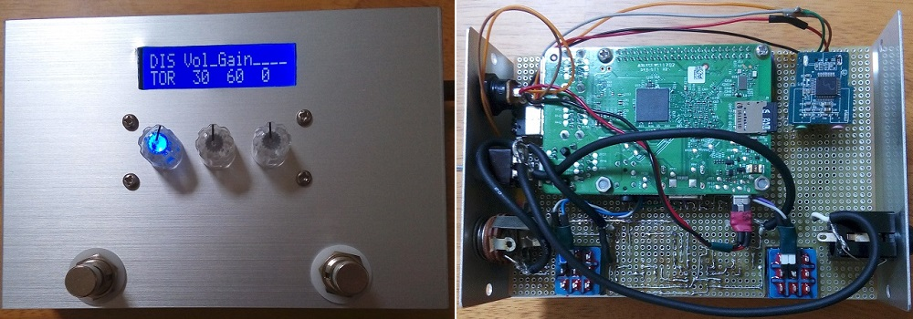
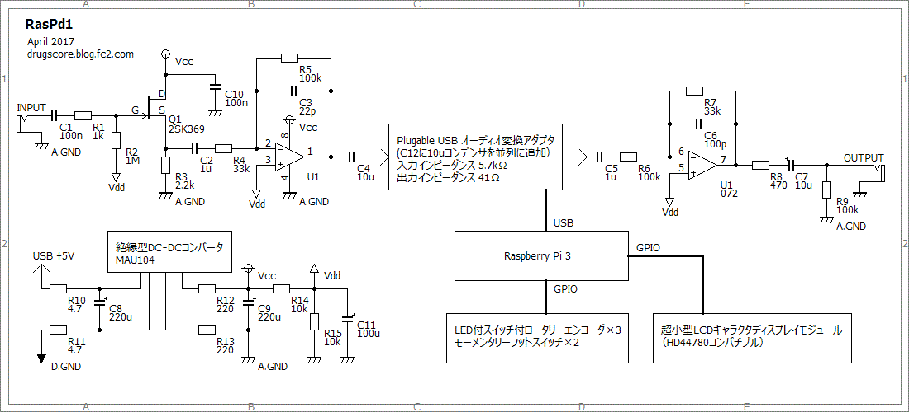

RasPd1 ハードウェア編
2017年04月20日 カテゴリー：Raspberry Pi エフェクター

Raspberry Pi 3とPure Data(Pd)を使ったデジタルエフェクターを作りました。名前は適当ですが「RasPd」（ラズピーディー）です。このシリーズが続くかわかりませんが、とりあえず1号機は完成ということにしておきます。
Raspberry Pi 3を選んだのは、ウェブ上での情報が多く、GUI環境があるというのは大きなメリットだと思ったためです。結局はレイテンシー低減のためGUIなしでやることになりましたが、やってみるとなんとか慣れてくるものです。実用的な設定でのレイテンシーは14msとまずまずの値となりました。
USBオーディオインターフェイスについては、別記事に記載しています。
→Raspberry Pi 用USBオーディオインターフェースの選定
Plugable USBオーディオ変換アダプタには前段にバッファーが必要となります。デジタル用USB電源5Vでそのままバッファーを動かすとノイズが大きいため、バッファー用にアナログ用電源を用意します。今回は絶縁型DC-DCコンバータで5Vを12Vに昇圧しました。絶縁型DC-DCコンバータはA.GND（アナロググラウンド）とD.GND（デジタルグラウンド）が内部で繋がっていない状態となっていて、ノイズ低減が見込めます。他には9V程度の電源からUSB用5Vに降圧させる案も考えられますが、Raspberry Pi 3に使えそうな5V・2Aの絶縁型DC-DCコンバータは手に入りにくいと思います。
▽回路図、接続図

電源は「USB5V電源→フィルタ→絶縁型DC-DCコンバータ→フィルタ→アナログ用電源」という形になっています。スイッチング電源のフィルタにはインダクタを入れるのが普通ですが、可聴域ではあまり変わらないのと手持ちに適当なものがなかったため入れていません。消費電力が大きいオペアンプでは電圧が下がりすぎるので、フィルタの抵抗値は半分でもよいと思います。
※ずっと「キーン」というノイズに悩まされていたのですが、Raspberry Pi 3本体を新品に変えるとなくなりました。いろいろな実験をするうちにどこかが故障していたのだと思います。ですので通常はここまでノイズ対策をする必要はなさそうです。絶縁型でないDC-DCコンバータでもよいかもしれません。
USBオーディオの周辺回路が面倒な感じになっているのは、高域のプリエンファシス・デエンファシスを考えていた名残です。高域だけ増幅すると影響が出そうなエフェクト（コンプレッサー等）がある気がしたので、単に音量を増減するという形にしました。
「超小型LCDキャラクタディスプレイモジュール」「2色LED付スイッチ付ロータリーエンコーダ」（1色だけ利用）は秋月電子で販売しているものです。回路図は省略しましたが、データシートの通りチャタリング防止の抵抗やコンデンサを入れています。
▽コントロール割り当て
左スイッチ／ロータリーエンコーダ： エフェクト切替／パラメータ増減
中央スイッチ／ロータリーエンコーダ： エフェクト切替／パラメータ増減
右スイッチ／ロータリーエンコーダ： パラメータのページ切替、長押しでシャットダウン／パラメータ増減
左フットスイッチ： エフェクトオン・オフ、オン時左LED点灯
右フットスイッチ： 特殊機能（ブースト機能等）オン・オフ、オン時中央LED点灯
側面トグルスイッチ： 緊急時のバイパス用
現在はエフェクト単機能を切り替えて使用するプログラムとなっていますが、将来的には複数のエフェクトを繋いだパッチを切り替えて使用できるようにしたいと思います。そのためにはプログラミングはもちろん、スイッチやLCDも変更していく必要がありそうです。
ソフトウェア編その1へ ソフトウェア編その2へ プログラミング編へ